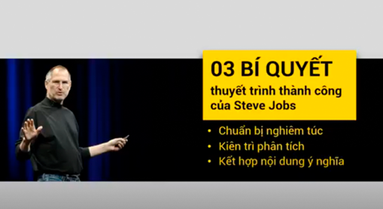
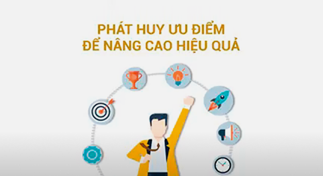
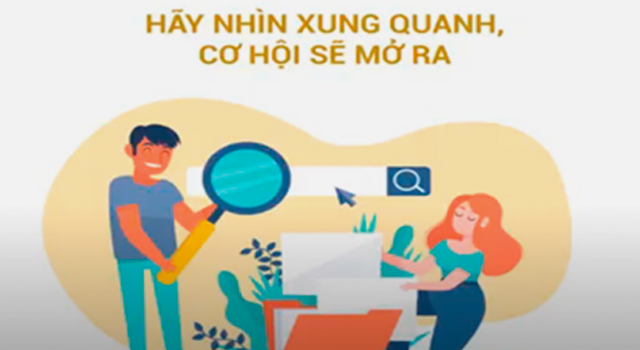
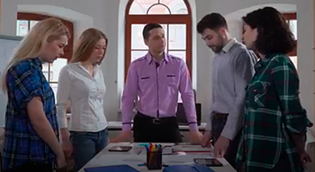
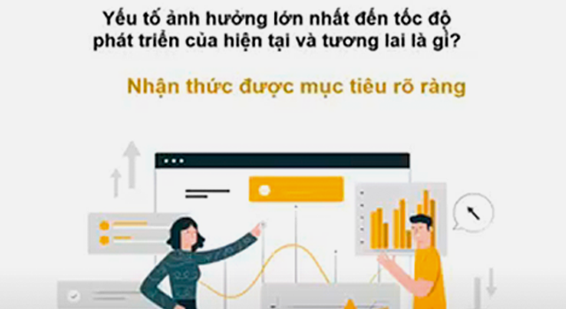

Khám phá các khóa học E-learning
Năm khả năng cốt lõi làm nên thành công
Khóa học giúp học viên nắm được 5 khả năng cốt lõi làm nên thành công là khả năng marketing, khả năng thực hiện chiến lược, khả năng giao tiếp, khả năng làm việc nhóm, khả năng phát triển bản thân.
Ba nguyên tắc chiến lược để đạt được mục tiêu
Khóa học giúp học viên nắm được 3 nguyên tắc chiến lược là xác định đối tượng cốt lõi của chiến lược, xây dựng kế hoạch hành động linh hoạt, chuẩn bị kế hoạch dự phòng.
Ứng dụng cú hích hiệu quả trong quản trị nhân sự
Thông qua các ví dụ từ Google va Apple, khóa học giúp học viên nắm được giá trị của cú hích (Nudge): thay đổi bầu không khí và văn hóa trong tổ chức doanh nghiệp, thay đổi hành vi của nhân viên và những chú ý khi sử dụng cú hích.
Thuật dùng người - bí quyết của nhà quản lý thành công
Khóa học giúp học viên hiểu được thuật dùng người, biết tập trung vào ưu điểm từng nhân viên và trao cho họ công việc phù hợp.
Thiết lập chỉ số KPI để đánh giá hiệu suất công việc
Khóa học giúp học viên nắm được phương pháp thiết lập KPI phù hợp và quy trình cụ thể hóa mục tiêu, thiết lập mục tiêu tiêu chuẩn theo "Chiến lược".
Thay đổi tương lai bằng kế hoạch phát triển năng lực
Khóa học giúp học viên hiểu được năng lực có ảnh hưởng trực tiếp tới việc tạo ra thành quả, hiểu rõ khái niệm năng lực, cụ thể hóa phương pháp phát triển năng lực và biết cách lập ra kế hoạch phát triển năng lực hiệu quả.
Sức mạnh của lời cay đắng
Khóa học giúp học viên hiểu được sức mạnh của những lời đóng góp thẳng thắn với cấp trên, giải quyết vấn đề lo sợ với cấp trên.

Sức mạnh của thuyết trình - Bài học từ Apple
Khóa học giúp học viên nắm được 3 bí quyết thuyết trình thành công của Steve Jobs: chuẩn bị nghiêm túc, kiên trì phân tích, kết hợp nội dung ý nghĩa.
Phương pháp xây dựng tầm nhìn tại thung lũng Silicon
Khóa học giúp học viên nắm được sự cần thiết của việc chia sẻ tầm nhìn doanh nghiệp cho nhân viên thông qua ví dụ cụ thể tại thung lũng Silicon.

Phát huy ưu điểm để nâng cao hiệu quả
Khóa học giúp học viên phát huy ưu điểm của bản thân, nâng cao hiệu quả công việc, làm chủ được điểm mạnh của mình.
Nỗ lực tạo nên kỳ tích
Khóa học đưa ra những minh chứng cụ thể về nỗ lực, giúp học viên hiểu được rằng trong tình thế yếu thế, không từ bỏ, khát khao tinh thần chiến thắng cộng với những nỗ lực bền bỉ sẽ tạo ra kỳ tích.
Những nguyên tắc cơ bản trong thời kỳ đổi mới
Khóa học giúp học viên hiểu rằng các tổ chức cần nhấn mạnh khả năng thay đổi, tính linh hoạt và tư duy sáng tạo, xây dựng một tổ chức với văn hóa vững mạnh để thích nghi với mọi sự đổi mới.
Những điều nhà quản lý nên làm trước khi bồi dưỡng nhân viên
Khóa học giúp học viên hiểu được những điều một nhà quản lý cần làm trước khi bồi dưỡng nhân viên: tự đánh giá bản thân, tiếp nhận những bản tự đánh giá bản thân của nhân viên, cùng nhau thực hiện chung nhiệm vụ phát triển năng lực.
Người lãnh đạo có thể nói gì để vực dậy tinh thần làm việc theo nhóm
Khóa học giúp học viên hiểu được lời nói và thái độ của trưởng nhóm có ảnh hưởng quan trọng đến thái độ làm việc của các thành viên và biết cách sử dụng lời nói, thái độ phù hợp.
Ngưng thử thách doanh nghiệp sẽ ngừng phát triển
Khóa học giúp học viên hiểu được từ trường hợp thành công của công ty Toyota rằng ngưng thử thách đồng nghĩa với việc doanh nghiệp sẽ ngừng phát triển và biết cách áp dụng vào thực tiễn công việc.
Nghệ thuật phản hồi mang tính xây dựng
Khóa học giúp học viên hiểu được phản hồi mang tính xây dựng là kỹ thuật cơ bản để lãnh đạo có thể làm việc lâu dài với nhân viên và học được về nghệ thuật phản hồi mang tính xây dựng.
Lựa chọn không làm gì cũng là một nghệ thuật
Khóa học giúp học viên hiểu được lựa chọn không làm gì cũng là một nghệ thuật và học được chiến lược lựa chọn việc mà mình không làm.
Kỹ năng trao quyền hiệu quả
Khóa học giúp học viên hiểu được định nghĩa về trao quyền và đưa ra các giải pháp để thực hiện trao quyền hiệu quả: suy nghĩ cho tương lai, đặt lòng tin vào bản thân và nhân viên, tìm đáp án từ nhân viên của bạn.
Kỹ năng quản lý hiệu suất công việc
Khóa học giúp học viên hiểu được cần làm việc bằng phương pháp quản lý theo hiệu suất. Thiết lập tầm nhìn nghề nghiệp và đưa ra các giải pháp để thực hiện trao quyền hiệu quả.
Hiểu đúng về đổi mới tại doanh nghiệp
Khóa học giúp học viên hiểu được khái niệm đúng về "đổi mới" tại doanh nghiệp, hiểu được đổi mới luôn phải gắn liền với những giá trị cốt lõi của doanh nghiệp.
Hiện tượng Zombie công sở và cách khắc phục
Khóa học giúp học viên hiểu về hiện tượng Zombie công sở, nắm được những phương án khắc phục và biết cách áp dụng vào thực tiễn công việc.
Hãy thay đổi điều kiện nhìn nhận vấn đề
Khóa học giúp học viên hiểu được rằng nhiều khi thay đổi điều kiện nhìn nhận vấn đề là cần thiết, biến một việc không thể thành có thể và nhìn ra phương án giải quyết.

Hãy nhìn xung quanh, cơ hội sẽ mở ra
Khóa học giúp học viên hiểu được có thể tìm thấy những cơ hội và kết quả bất ngờ bằng cách nhìn theo một phương diện khác và áp dụng vào thực tiễn công việc.
Hãy nâng cao sự tận tụy với tổ chức nếu muốn tăng năng suất làm việc
Khóa học giúp học viên nắm được các phương pháp nâng cao sự tận tụy với tổ chức: tìm hiểu chính xác các vấn đề tâm tư của nhân viên, mở rộng quyền lựa chọn trong công việc, hỗ trợ phúc lợi trên phương diện liên chức năng.
Hackathon - Nơi tập hợp những nhà khởi nghiệp thành công
Khóa học giúp học viên nắm được các thông tin cơ bản về Hackathon như một nơi để học hỏi và thực hiện sự hợp tác, tiêu biểu cho văn hóa tổ chức của thung lũng Silicon và trở thành lĩnh vực đổi mới mang tính mở.
Giữ lửa và lan tỏa đam mê
Khóa học giúp học viên nắm được phương pháp để giữ lửa và lan tỏa đam mê khi lãnh đạo và biết cách áp dụng vào thực tiễn công việc: mục tiêu rõ ràng, đủ khả năng thực hiện, ghi nhận phản hồi, cân bằng giữa năng lực của nhân viên với mức độ khó khăn của vấn đề.
Đổi mới nhỏ mang lại thành công
Khóa học giúp học viên hiểu được rằng doanh nghiệp muốn đổi mới cần chú trọng, tập trung vào những ý tưởng hay giải quyết được những khó chịu và bất tiện nhỏ nhặt mà khách hàng đang cảm nhận trong cuộc sống, khi đó sẽ tảo ra sản phẩm và dịch vụ thân thuộc, có giá trị.
Để không thất bại trong quản lý sự thay đổi
Khóa học giúp học viên nắm được phương pháp quản lý sự thay đổi cần thống nhất giữa quá trình lập kế hoạch và thực hiện, dẫn dắt sự thay đổi một cách tự nguyện.
CMCN 4.0 - Cơ hội chuyển mình của doanh nghiệp
Khóa học giúp học viên hiểu được cơ hội chuyển mình của doanh nghiệp trong CMCN 4.0 và biết cách tận dụng trong thực tiễn.
Cấp trên xuất sắc là một huấn luyện viên
Khóa học giúp học viên nắm được 3 yếu tố để cấp trên trở thành một huấn luyện viên: biết cách đặt câu hỏi, khen ngợi công khai, chỉ trách móc khi có 2 người, quy định và chỉ đạo không phải giải pháp khả thi.
Cách tạo sự say mê từ những nhà phát minh vĩ đại
Khóa học giúp học viên hiểu được cách tạo sự say mê từ những nhà phát minh vĩ đại: làm chủ được mục tiêu, biết cách tận hưởng quá trình, chấp nhận sự thử thách

Bốn điều nhà lãnh đạo mới cần tránh
Khóa học giúp học viên nắm được bốn điều nhà lãnh đạo mới nên tránh là hội chứng ngừng phát triển, hội chứng ngày cuối nhiệm kỳ, hội chứng vách ngăn, hội chứng ngôi sao.

Bí quyết xây dựng mục tiêu để tăng tốc
Khóa học giúp học viên biết được cách xây dựng mục tiêu để tăng tốc: mục tiêu rõ ràng, mục tiêu cần có bối cảnh.
Bí quyết tạo sự say mê cho nhân viên của Facebook
Khóa học giúp học viên nắm được bí quyết tạo sự say mê cho nhân viên: tạo niềm tin tích cực về một tương lai tươi sáng của công ty, chia sẻ sứ mệnh của công ty, chia sẻ sứ mệnh hoạt động mà công ty đang đóng góp cho xã hội.